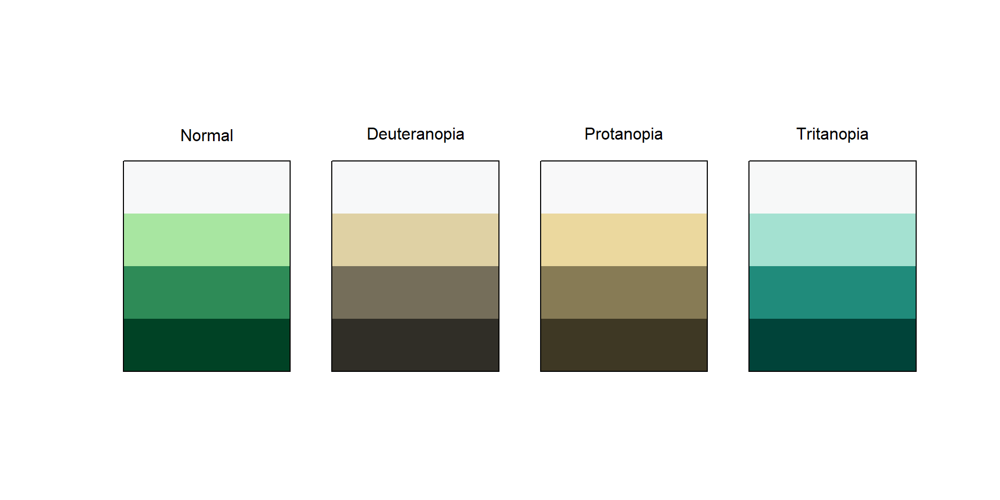

paleta <- c("#004225", "#2E8B57", "#A8E6A1", "#F7F8F9")
prismatic::check_color_blindness(paleta)


Get ready with me para armar
Presentaciones
con Quarto
Todo lo que necesitas
en un solo lugar üòâ


¿Qui√©n alguna vez us√≥ Quarto? üôã‚Äç‚ôÄÔ∏è
¿Qui√©n alguna vez us√≥ RMarkdown? üôã‚Äç‚ôÄÔ∏è
S√© qu√© es Quarto / Rmarkdown pero nunca lo us√© üôã‚Äç‚ôÄÔ∏è
revealjs es el sustituto de Xaringan, pero con sintaxis nativa de Pandocbeamer para diapositivas LaTex (PDF)Powerpoint para cuando tengas que trabajar a través de OfficeDefiniciones
pandoc es una herramienta de conversión de documentos que permite transformar archivos markdown a pdf, word, latex, etc.
xaringan es un paquete de R basado también en reveal.js, muy popular en R Markdown
reveal.js es un marco de trabajo de presentaciones HTML de código abierto. Permite a cualquier persona crear presentaciones completas y atractivas de forma gratuita en la web. Guía aquí
{revealjs}
Allá vamos
ppt.qmdindex.qmd
---
title: "Quarto básico"
format: revealjs
editor: visual
---
## Quarto
Quarto enables you to weave together content and executable code into a finished presentation. To learn more about Quarto presentations see <https://quarto.org/docs/presentations/>.
## Bullets
When you click the **Render** button a document will be generated that includes:
- Content authored with markdown
- Output from executable code
## Code
When you click the **Render** button a presentation will be generated that includes both content and the output of embedded code. You can embed code like this:
::: {.cell}
::: {.cell-output .cell-output-stdout}[1] 2
:::
:::

yaml
---
title: "Presentación"
format:
revealjs:
height: 900
width: 1600
transition: slide
transition-speed: fast
slide-number: h.v #< collapsed/total | h.v: Horizontal . vertical slide number
# h/v: Horizontal / vertical slide numbe | c: Flattened slide number | c/t: Flattened slide number / total slides (default)
---| Transición | Descripción |
|---|---|
none |
Ninguna |
fade |
Fundido cruzado |
slide |
Deslizamiento horizontal |
convex |
Deslizamiento en ángulo convexo |
concave |
Deslizamiento en ángulo cóncavo |
zoom |
Escala la diapositiva entrante para que crezca desde el centro de la pantalla. |
index.qmd
---
title: "Imágenes y centrado"
format: revealjs
---
## Imágenes

## Especificar el lugar de la imágen
{.absolute top="200" left="0" width="350"}
{.absolute top="50" right="50" width="250" height="450"}
{.absolute bottom="0" right="30%" height="400"}
## Solapadas
::: {.r-stack}
{.fragment width="450"}
{.fragment width="400"}
{.fragment width="300"}
:::
Pandoc permite aplicar clases CSS a bloques de contenido o fragmentos de texto usando una sintaxis especial en markdown.
Es equivalente a
Esto aplica una clase CSS clase-span solo a esa palabra o fragmento. Es equivalente a:
index.qmd
---
title: "Fragmentos y bloques"
format:
revealjs:
incremental: true
editor: visual
---
## Listas incrementales
::: incremental
- First item
- Second item
:::
También lo podemos apagar
::: nonincremental
- 1st Item
- 2nd Item
:::
## No se limita solo a bullets
. . .
frena
## Fragmentos
::: fragment
Aparece
:::
::: {.fragment .fade-out}
Se va
:::
::: {.fragment .highlight-red}
En rojo
:::
::: {.fragment .fade-in-then-out}
Aparece y se va
:::
## Combinados {.smaller}
Podemos hacer que a 1 solo fragmento le suceda todo junto
::::: {.fragment .fade-in}
:::: {.fragment .highlight-red}
::: {.fragment .semi-fade-out}
Hola \> Rojo \> Adiós
:::
::::
:::::
Esta es una [frase importante!]{.fragment .highlight-red}
Podemos hacer que algo [aparezca]{.fragment .fade-in} en el medio de una oración
## Orden
::: {.fragment fragment-index="3"}
Último
:::
::: {.fragment fragment-index="1"}
Aparece primero
:::
::: {.fragment fragment-index="2"}
Segundo
:::
index.qmd
---
title: "Colores y fondos"
format:
revealjs:
incremental: true
editor: visual
---
## Fondo se color azul {background-color="blue"}
## Fondo con una imagen {background-image="imagenes/quarto-fondo.png" background-size="cover"}
## Atributos
| **Atributo** | **Default** | **Descripción** |
|:-----------------------|:-----------------------|:-----------------------|
| `background-image` | | |
| `background-size` | cover | Ver [background-size](https://developer.mozilla.org/docs/Web/CSS/background-size) |
| `background-position` | center | Ver [background-position](https://developer.mozilla.org/docs/Web/CSS/background-position) |
| `background-repeat` | no-repeat | Ver [background-repeat](https://developer.mozilla.org/docs/Web/CSS/background-repeat) . |
| `background-opacity` | 1 | Opacidad. Escala de 1 (muy opaco) a 0 (transparente) |
## Atributos {.smaller}
| **Atributo** | **Default** | **Descripción** |
|:-----------------------|:-----------------------|:-----------------------|
| `background-image` | | |
| `background-size` | cover | Ver [background-size](https://developer.mozilla.org/docs/Web/CSS/background-size) |
| `background-position` | center | Ver [background-position](https://developer.mozilla.org/docs/Web/CSS/background-position) |
| `background-repeat` | no-repeat | Ver [background-repeat](https://developer.mozilla.org/docs/Web/CSS/background-repeat) . |
| `background-opacity` | 1 | Opacidad. Escala de 1 (muy opaco) a 0 (transparente) |
index.qmd
---
title: "Otras cositas"
format: revealjs
editor: visual
---
## Centrado {.center}
Permite tener el texto o imagenes en el centro de la diapositiva
## {.center}
[texto grande]{.r-fit-text}
## Alineación
::: {style="text-align: right;"}
<h2>Alineado a la derecha</h2>
- Ejemplo
- Otro ejemplo
:::
## Tabsets
::: panel-tabset
### Pestaña 1
Pestaña 1
### Pestaña 2
Pestaña 2
:::
## Notas al pie {.smaller}
::: aside
Notas sin número
:::
Notas numeradas[^1]
[^1]: Esto es una nota al pie
#| code-line-numbers: "3" para resaltar la 3° linea
#| output-location: column para mostrar el resultado a la izquierda y no abajo
#| output-location: column
#| code-line-numbers: "3"
library(highcharter)
hchart(
df_series,
type = "line",
hcaes(x = x, y = y, group = grupo)
) |>
hc_title(text = "<b>Gráfico de líneas</b>") |>
hc_subtitle(text = "<i>Ejemplo de gráfico de líneas en Highcharter con datos generados</i>") |>
hc_credits(enabled = TRUE, text = "http://elartedeldato.com")library(highcharter)
hchart(
df_series,
type = "line",
hcaes(x = x, y = y, group = grupo)
) |>
hc_title(text = "<b>Gráfico de líneas</b>") |>
hc_subtitle(text = "<i>Ejemplo de gráfico de líneas en Highcharter con datos generados</i>") |>
hc_credits(enabled = TRUE, text = "http://elartedeldato.com")¿Y si no es
lo que quiero?
que no estan preseteados?
colores
fuentes
tamaños

SCSS (Sassy CSS) es una sintaxis más moderna y flexible de SASS (Syntactically Awesome Stylesheets), un lenguaje de preprocesador CSS.
CSS
Significa Cascading Style Sheets (Hojas de estilo en cascada).
Es un lenguaje que se usa para dar estilo a las páginas web: controla cómo se ven los elementos en pantalla (colores, tamaños, tipografías, márgenes, etc.).
¿Cómo
lo usamos?
Es importante aseguramos que la paleta elegida sea legible para personas con diferentes tipos de daltonismo.
prismatic::check_color_blindness()
.scss ¿Cómo usarlo?Comentarios importantes
.scsssstyle.scss
/*-- scss:defaults --*/
/* Importo TODAS mis Google Fonts usando el link */
@import url('https://fonts.googleapis.com/css2?family=Fascinate&family=Merienda:wght@300..900&family=Montserrat+Alternates:ital,wght@0,100;0,200;0,300;0,400;0,500;0,600;0,700;0,800;0,900;1,100;1,200;1,300;1,400;1,500;1,600;1,700;1,800;1,900&family=Titillium+Web:ital,wght@0,200;0,300;0,400;0,600;0,700;0,900;1,200;1,300;1,400;1,600;1,700&family=Crimson+Text:ital@0;1&family=Sail&display=swap');
/* Defino la fuente base de la presentación */
$font-family-sans-serif: "Montserrat Alternates", sans-serif;
/* Definición de colores principales en tonos verdes */
$theme-darkgreen: #004225; // verde oscuro elegante
$theme-green: #2E8B57; // verde principal tipo 'sea green'
$theme-lightgreen: #A8E6A1; // verde claro suave, casi pastel
$theme-white: #F7F8F9; // blanco neutro
// Colores de fondo y texto
$body-bg: $theme-darkgreen; // fondo de la página
$body-color: $theme-white; // color principal del texto
$link-color: $theme-green; // color de enlaces
// titulo
$presentation-heading-color: lighten($theme-green, 15%);
/*-- scss:rules --*/{.CSS}Permiten agregar, por ejemplo, colores para resaltado.
mi-estilo.css
Cuando diseñás un estilo para un fragmento, podés decidir cómo se ve antes de mostrarse, cómo se ve mientras aparece, y cómo se ve cuando ya está mostrado.
RevealJS hace todo el trabajo de cambiar de un estado a otro usando fragment-index.
mi-estilo.css
/* Fragmento personalizado: hl-green */
.reveal .slides section .fragment.hl-green {
opacity: unset;
visibility: unset;
&.visible {
background-color: $theme-lightgreen;
padding: 0.2em 0.4em;
border-radius: 4px;
}
&.current-fragment {
background-color: darken($theme-yellow, 10%);
color: $theme-darkgreen;
}
}## Quarto
[Quarto]{.yellow} enables you to weave [together content and executable code into a finished presentation]{.yellow}. To learn more about Quarto presentations see <https://quarto.org/docs/presentations/>.
- Punto inicial
- Otro punto
- Fragmento destacado:
::: {.fragment .hl-green}
Este aparece con fondo verde
:::| Estado | Selector |
|---|---|
| Antes | .fragment.hl-green |
| Mientras | .fragment.hl-green.current-fragment |
| Después | .fragment.hl-green.visible |
Presentaciones
y templates
para inspirarnos
Formoso, J (2024). Transforma tus datos en historias visuales con Quarto. Disponible en este enlace
Mock T (2022) 05 - Presentations. Presentación realizada para RStudio - conf. Disponible en este enlace
Hvitfeldt, E (2024). Stunning presentations.
Hvitfeldt, E (2024). Talk branded quarto abuja
Hvitfeldt, E (2023). Talk quarto theming en Posit Conf 2023
Blog de slidecraft 101 enlace